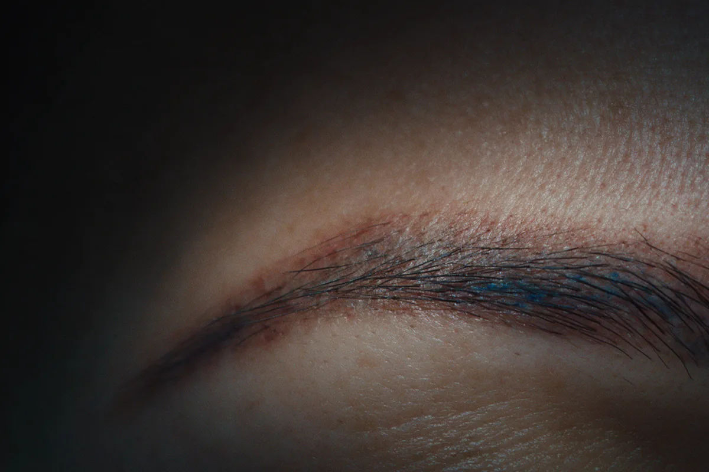
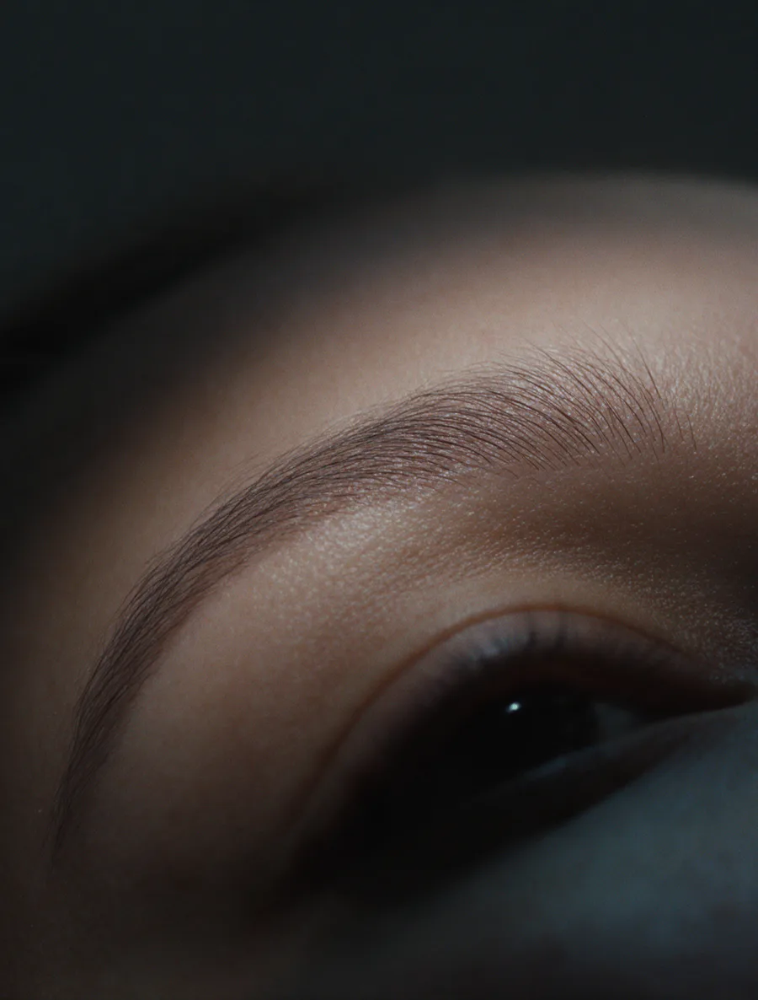

Renata DarehClinic · São Paulo
Sua sobrancelha merece uma nova história.
Remoção a laser de micropigmentação e tatuagem, e Nanoblading fio a fio. Na Consolação, em São Paulo.
Agendar pelo WhatsAppCapítulo um
O pigmento que ficou.
Ela foi feita para facilitar a rotina. Com os anos, o desenho que era seu passou a parecer de outra pessoa.
O tom esfriou, o traço engrossou, o formato deixou de combinar com o rosto. E toda manhã começa disfarçando o que deveria estar a seu favor.
Corrigir por cima costuma esconder o problema por um tempo e somar camadas. Remover devolve a pele ao ponto de partida, para que você decida, com calma, o que vem depois.
- AzuladoO pigmento escuro esfriou e aparece acinzentado sob a pele.
- AlaranjadoSobra de uma remoção anterior ou de um pigmento que oxidou.
- DuroContorno marcado, sem fio, que não acompanha o seu rosto hoje.
- AssimétricoUm lado diferente do outro, que nenhuma maquiagem resolve.

Capítulo dois
A pele volta, sessão a sessão.
O laser não cobre e não clareia. Ele quebra o pigmento em partículas tão pequenas que o próprio corpo consegue eliminar.
Por isso o resultado chega aos poucos. Entre uma sessão e outra a pele descansa e o organismo faz a parte dele. O número de sessões depende do pigmento, da profundidade e da sua pele, e é definido na avaliação.
Experimente abaixo. Toque na sobrancelha para disparar o laser, ou avance uma sessão de cada vez.
Simulação ilustrativa. O número de sessões e o resultado variam de pessoa para pessoa e são avaliados pessoalmente.
Sem tinta por cima. Sem desenho novo escondendo o antigo.
Na avaliação
Renata olha o pigmento, a profundidade e a sua pele, e explica com franqueza quantas sessões fazem sentido e o que esperar de cada uma.
Depois
Com a pele livre, você escolhe: deixar o fio natural ou refazer o desenho com Nanoblading, agora do jeito que combina com você.
Capítulo três
O que tratamos.
Cada área pede um protocolo. Escolha o seu e fale direto com a Renata.

-
Remoção de micropigmentação
Perguntar ↗Sobrancelhas, lábios e contorno dos olhos.
-
Remoção de tatuagem
Perguntar ↗Do traço fino ao preenchimento, em diferentes regiões do corpo.
-
Correção do pigmento laranja
Perguntar ↗Quando o tom alaranjado ficou depois de uma remoção ou de um pigmento que oxidou.
-
Nanoblading
Perguntar ↗Fios desenhados um a um, para uma sobrancelha natural depois da remoção.
-
Laser CO2 fracionado
Perguntar ↗Renovação da textura da pele.
Capítulo quatro
Quem conduz.
Naturalidade, precisão e sofisticação.
Renata Dareh dedica a clínica a um trabalho que pede mais paciência do que pressa: tirar da pele o que não deveria mais estar lá.
Especialista em remoção de pigmento, ela atende na Consolação, em São Paulo, e acompanha cada caso do primeiro disparo até a pele estar pronta para uma nova história.
- 5,0Nota média em 11 avaliações. Ler no Google ↗
- Especialidade
- RemoçãoDe micropigmentação e tatuagem, a laser.
- Onde
- ConsolaçãoR. Frei Caneca, 1212, conj. 87.
- Perfil verificado@renatadareh.clinic ↗